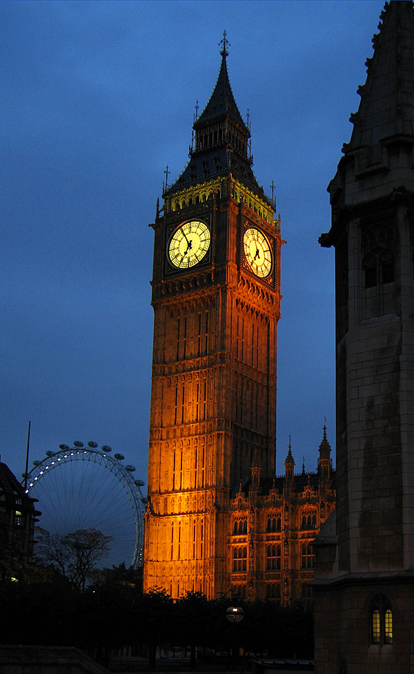
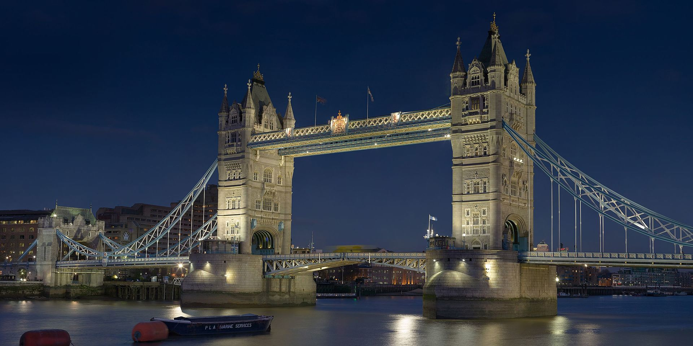
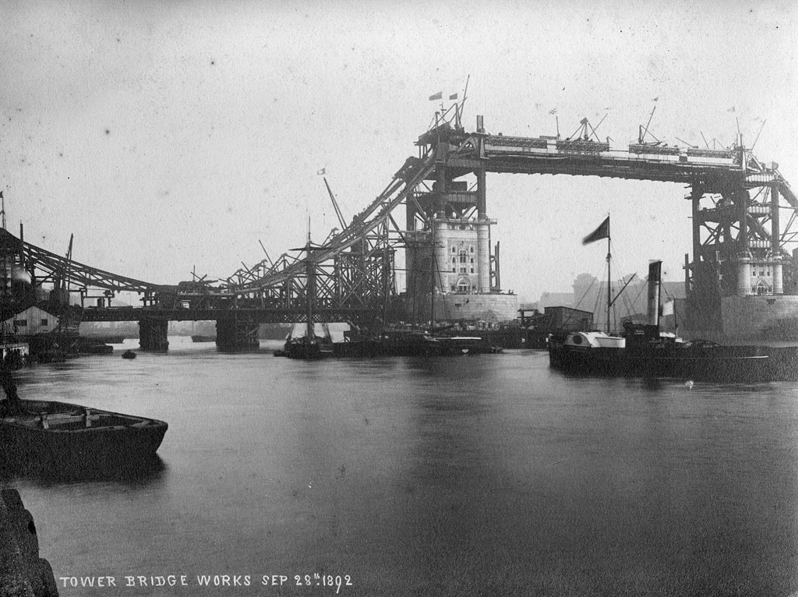

Atractii
Big Ben
Big Ben (în traducere, Marele Ben) este porecla marelui clopot al ceasului din turnul de nord al Palatului Westminster din Londra. Acest nume a fost utilizat atât în cazul clopotului, cât și al ceasului și chiar al turnului cu ceas. Big Ben este cel mai mare ceas cu clopot și patru fețe, și al treilea turn cu ceas ca înălțime din lume. Ceasul a fost pus în funcțiune în ziua de 31 mai 1859. Cea mai apropiată stație de metrou este Westminster de pe liniile Circle, District și Jubilee.
La Westminster s-a construit un turn cu ceas în 1288. Turnul actual a fost înălțat ca parte din proiectul lui Charles Barry de construcție a unui nou palat, după ce vechiul Palat Westminster a fost distrus de incendiu în noaptea de 16 octombrie 1834.Noul Parlament a fost construit în stil neogotic. Deși Barry era arhitect-șef al Palatului, el a apelat la Augustus Pugin pentru a proiecta turnul cu ceas, turn ce se aseamănă cu alte turnuri proiectate de Pugin, printre care se numără cel de la Scarisbrick Hall. Proiectul turnului cu ceas a fost ultimul realizat de Pugin înainte de a înnebuni și a muri, el însuși scriind, la momentul când Barry a venit la el să ia schițele: „Nu am muncit niciodată atât de mult în viața mea [ca] pentru dl. Barry căci mâine îi dau toate schițele pentru terminarea turnului său cu ceas și este frumos.” Turnul are 96,3 m înălțime.
Primii 61 m de la bază sunt construiți din căramidă învelită în calcar de Anston colorat cu nisip. Restul turnului este din fier. Turnul își are baza pe o placă de beton pătrată cu latura de 15 m și cu o grosime de 3 m, aflată la o adâncime de 4 m sub pământ. Cele patru fețe ale ceasului se află la o înălțime de 55 m. Volumul interior al turnului este de 4.650 m³.Deși este una dintre cele mai importante atracții turistice din lume, interiorul turnului nu este deschis vizitatorilor străini, doar cetățenii Regatului Unit putând să aranjeze vizite (cu multe zile în avans) prin intermediul parlamentarului lor. Turnul nu are lift, astfel că vizitatorii trebuie să urce toate cele 334 de trepte până la vârf. Din cauza schimbării stării solului de la construcție (în primul rând prin construcția liniei de metrou Jubilee), turnul este ușor înclinat spre nord-vest, cu aproximativ 220 milimetri la fața ceasului, aproximativ 1/250.

Big Ben a fost cel mai mare ceas cu patru fețe din lume, fiind depășit între timp de Turnul cu ceas Allen-Bradley din Milwaukee, Wisconsin. Acest ceas însă nu are clopot, deci ceasul din Westminster încă este cel mai mare ceas cu patru fețe și clopot din lume.
Ceasul și fețele sale au fost proiectate de Augustus Pugin. Fețele sunt fixate într-un cadru de fier cu diametrul de 7 m, care susține 312 bucăți de sticlă de opal. Unele din bucățile de sticlă pot fi înlăturate pentru inspectarea brațelor. Cadrul fiecărei fețe este aurit. La baza fiecărei fețe este gravată inscripția în latină: „DOMINE SALVAM FAC REGINAM NOSTRAM VICTORIAM PRIMAM" care se traduce „Doamne, apără pe a noastră regină Victoria Întâia.”
Clopotul principal, denumit oficial Great Bell (în traducere, Marele Clopot), este cel mai mare clopot din turn. El a fost primul care a primit porecla Big Ben. Clopotul instalat inițial cântărea 16.3 tone și a fost turnat la 6 august 1856 la Stockton-on-Tees de către John Warner & Sons. Clopotul a fost denumit în cinstea lui Sir Benjamin Hall, numele acestuia fiind gravat pe clopot. Există și o altă teorie privind originea numelui său, și anume că ar proveni de la numele boxeurului de categorie grea Benjamin Caunt. Se crede că clopotul ar fi trebuit denumit Victoria sau Royal Victoria în cinstea reginei Victoria, dar că un parlamentar a propus această poreclă în timpul unei dezbateri; acest presupus comentariu nu este însă înregistrat nicăieri în Hansard.
Tower Bridge
Tower Bridge este un pod peste Tamisa situat în Londra. Podul a fost construit între anii 1888 - 1894 și leagă partea de sud cu nordul orașului. Lungimea totală a podului este de 244 m, înălțimea pilierilor atinge 65 m. Tower Bridge a fost proiectat în stilul neogotic de Horace Jones. Pe malul de nord al Tamisei se află Turnul Londrei (Tower of London) și Saint Katharine Docks. Pe malul de sud se găsește City Hall. Frecvent turiștii confundă Tower Bridge cu Podul Londrei (London Bridge), care este podul următor pe direcția sensului de curgere a Tamisei. O legendă urbană spune că în 1968, Robert McCulloch, cel care a cumpărat London Bridge și l-a reconstruit în Lake Havasu, a crezut că a cumpărat Tower Bridge. Acest zvon a fost infirmat de McCulloch și de Ivan Luckin, cel care a vândut podul.
Tower Bridge este în același timp un pod mobil și un pod suspendat. Podul are două turnuri care sunt legate între ele la nivelul superior prin pasarele, care au rolul de a se opune forțelor orizontale exercitate de secțiunile suspendate ale podului de pe părțile dinspre uscat ale turnurilor. Componentele verticale ale forțelor din secțiunile suspendate și reacțiile verticale ale celor două pasarele sunt suportate de cele două turnuri robuste. Pivoții pentru basculare și mașinile necesare deschiderii podului sunt adăpostite la baza fiecărui turn. Culoarea actuală a podului datează din 1977 când a fost vopsit în roșu, alb și albastru în onoarea Reginei Elisabeta a II-a, cu prilejul celei de-a 25-a aniversări a urcării pe tron. Culoarea originală a fost maro ciocolatiu.
In a doua jumătate a secolului al XIX-lea, dezvoltarea comerțului în estul Londrei a dus la o cerere de construire a unui nou pod în aval de Podul Londrei. Un pod tradițional, fix, nu putea fi construit pentru că ar fi împiedicat accesul la facilitățile portuare în zona Pool of London, între Podul Londrei și Turnul Londrei. În 1876 a fost format un comitet special, condus de Sir Albert Joseph Altman, pentru a găsi o soluție cu privire la problema traversării râului. Comisia a organizat un concurs de proiecte. Peste 50 de planuri au fost trimise, inclusiv unul creat de un inginer, Sir Joseph Bazalgette. Modul de evaluare a proiectelor a fost controversat și numai în 1884, un proiect trimis de Horace Jones, arhitectul orașului (care era și unul din membrii juriului), a fost aprobat.
In a doua jumătate a secolului al XIX-lea, dezvoltarea comerțului în estul Londrei a dus la o cerere de construire a unui nou pod în aval de Podul Londrei. Un pod tradițional, fix, nu putea fi construit pentru că ar fi împiedicat accesul la facilitățile portuare în zona Pool of London, între Podul Londrei și Turnul Londrei. În 1876 a fost format un comitet special, condus de Sir Albert Joseph Altman, pentru a găsi o soluție cu privire la problema traversării râului. Comisia a organizat un concurs de proiecte. Peste 50 de planuri au fost trimise, inclusiv unul creat de un inginer, Sir Joseph Bazalgette. Modul de evaluare a proiectelor a fost controversat și numai în 1884, un proiect trimis de Horace Jones, arhitectul orașului (care era și unul din membrii juriului), a fost aprobat.
Palatul Buckingham

Palatul Buckingham este reședința principală din Londra a monarhilor britanici. Situat în Orașul Westminster, palatul este folosit pentru evenimente de stat și pentru cazarea invitaților regali. A fost centrul social al poporului britanic în momente de veselie și doliu național. Inițial cunoscut drept „Casa Buckingham”, clădirea care formează partea principală a palatului de astăzi a fost o casă construită pentru Ducele de Buckingham în 1705, pe care a Regele George III-lea a cumpărat-o în 1761 ca o reședință privată pentru Regina Charlotte, și a fost cunoscută drept „Casa Reginei”. De-a lungul secolului XIX-lea a fost mărită, în principal de arhitecții John Nash și Edward Blore, formând cele 3 colțuri din jurul curții centrale.
Palatul Buckingham a devenit oficial Palat Regal al monarhului britanic la urcarea pe tron a Reginei Victoria în 1837, fiind primul monarh care a avut reședința permanentă aici. Ultimele modificări structurale au fost făcute la sfârșitul secolului XIX și începutul secolului XX, incluzând fațada estică a palatului care cuprinde bine-cunoscutul balcon de unde Familia Regală salută mulțimile din Piața Victoria. Totuși Capela palatului a fost distrusă bombele germane în Cel de-al doilea război mondial ( 1940 ). În locul capelei, la sugestia Reginei și a Ducelui de Edinburgh , edificiul a fost recreat ca o galerie pentru colecția Regală "Royal Collection" în anul 1962. Ulterior, galeria a suferit diferite extinderi cât și o amplă renovare pentru a sărbători "Golden Jubilee" (50 de ani de la înscăunare) în 2002.
Interioarele originiale de la începutul secolului XIX, multe din care încă există, includ folosirea pe scară largă a foarte coloratei scangliola, albastru lapis și roz la sfatul lui Sir Charles Long. Regele Eduard al VII-lea a supervizat o parte din redecorări. Încăperile de stat, folosite în ceremonii oficiale și de stat sunt deschise publicului în fiecare an în august și septembrie, ca parte a Deschiderii de vară a Palatului. Uneori palatul este denumit colocvial ca „Buck House”
British Museum

Fondat în 1753, British Museum (Muzeul Britanic) este unul dintre cele mai vechi și mai impozante muzee din lume, cu exponate variind de la mumii egiptene la comori romane.British Museum a fost fondat în anul 1753, fiind primul muzeu național public din lume. Încă de la început admitea intrarea liberă pentru „toate persoanele studioase și curioase”.
Originile muzeului le găsim în testamentul unui medic, naturalist și colecționar, Sir Hans Sloane (1660 – 1753). De-a lungul vieții sale acesta a colecționat peste 71.000 de obiecte ce trebuiau să fie păstrate intacte și după moartea sa. Așa că întreaga colecție a fost lăsată moștenire regelui George al II-lea în schimbul sumei de 20.000 de lire sterline ce urma să fie acordată moștenitorilor lui Sir Hans Sloane. Regele a acceptat această donație și pe 7 iunie 1753 un Act al Parlamentului Britanic a stabilit înființarea British Museum.
British Museum s-a deschis publicului la 15 ianuarie 1759. Colecția de început conținea manuscrisuri, cărți, obiecte uscate din natură, câteva antichități. În prezent British Museum are expuse numeroase obiecte de o valoare inestimabilă, multe din acestea cunoscute publicului precum: Piatra Rosetta, Craniul de cristal, Sfinxul din Taharqo, un fragment din Columna lui Traian, Bustul lui Julius Caesar etc. Obiectele sunt cuprinse în galeriile tematice ale muzeului: Africa, Asia, America, Egiptul Antic, Roma și Grecia antică, Europa, Colecția de ceasuri, Orientul Mijlociu, etc.
British Museum oferă vizitatorilor și expoziții temporare tematice ce nu trebuie ocolite, care sunt însă contra cost. Numărul de vizitatori ai British Museum a crescut de la 5000 pe an în secolul al XVIII-lea, pânǎ la aproximativ 6.000.000 pe an în prezent.
Westminster Abbey

Westminster Abbey (în română Abaţia Westminster; de fapt The Collegiate Church of St. Peter, Westminster, în română Biserică colegială Sfântul Petru, Westminster) este o biserică din Londra. Este situată în City of Westminster, la vest de Palace of Westminster. În mod tradiţional, aici sunt încoronaţi şi îngropaţi regii Angliei (mai târziu monarhi britanici). Construcţia sa a început în secolul XI. Este mormântul majorităţii regilor şi reginelor engleze, dar şi a mai multor oameni celebri. Colţul poeţilor aduce onoruri scriitorilor Regatului Unit. Aproape toate încoronările monarhilor englezi au avut loc în această abaţie. Această biserică nu trebuie să fie confundată cu catedrala romano-catolică Westminster Cathedral.
Conform legendei, un pescar numit Aldrich a avut o viziune a Sfântului Petru în apropiere de Tamisa. Între anii 960-970, Sfântul Dunstan, episcopul de Londra, a stabilit o mică abaţie benedictină în această zonă. Abaţia, dedicată Sfântului Petru, a fost reconstruită în anul 1042 de către regele Eduard Confesorul, considerat a fi adevăratul fondator al abaţiei, ce îşi dorea o biserică pentru înmormântarea sa şi a succesorilor săi. Biserica a fost sfinţită pe data de 28 decembrie 1065, la o săptămână înainte de moartea lui Eduard, dar ea a fost complet finalizată în anul 1090. Pe data de 25 decembrie 1066, aici a avut loc încoronarea lui William Cuceritorul ca rege al Angliei marcând începutul dominaţiei normande. În această perioadă numărul călugărilor din incinta abaţiei a crescut considerabil.
Construcţia actualei abaţi a început sub patronajul regelui Henric al III-lea. Cu toate acestea, biserica în stil gotic a fost finalizată abia în anul 1517. Abatele de la Westminster era unul dintre cei mai influenţi oameni din perioada Angliei medievale. Acest lucru se datora faptului că abaţia condusă de el era locul unde erau încoronaţi şi înmormântaţi monarhii, cât şi locul unde aveau loc nunţile lor sau cele ale unor nobili importanţi. De asemenea, abaţia se învecina cu Palatul Westminster, abatele având o influenţă asupra deciziilor luate acolo sau chiar intervenind în discuţi în unele cazuri. Abaţia s-a îmbogăţit nespus de mult pe urma pelerinajelor şi a darurilor. Oamenii veneau aici să se închine şi să vadă locul unde Aldrich a avut viziunea cu Sfântul Petru. Exista o tradiţie ca pescarii să vină să aducă peşte din Tamisa călugărilor de la abaţie. Se spune că abaţia era cea mai bogată din Anglia, a doua fiind Abaţia Glastonbury.

Iniţial romano-catolică, abaţia Westminster a adoptat în anul 1535 anglicanismul în urma Reformei Protestante. Atunci, călugării au fost alungaţi, abaţia desfiinţată (rămânând doar cu numele) şi veniturile ei uriaşe au fost confiscate de către stat. În anul 1540, abaţia a devenit catedrala Londrei pentru o scurtă perioadă de timp însă, până în anul 1550 când sediul episcopal s-a mutat la Saint Paul. În timpul domniei reginei Maria I (1553-1558) a avut loc o încercare de restaurare a catolicismului în Anglia în urma căreia benedictinii au fost readuşi la Westminster, până în 1559 când regina Elisabeta I îi va alunga din nou. În anul 1560, Elisabeta a acordat abaţiei titlul de biserică regală, independentă de episcopie şi supusă direct suveranului. În acelaşi timp a devenit biserică colegială fiind întemeiată aici o renumită universitate. Biserica a suferit numeroase daune în timpul Revoluţiei engleze, mai ales în anul 1640 când puritanii iconoclaşti au distrus unele dintre statuile şi mormintele regilor.
Între anii 1722-1745, arhitectul Nicholas Hawksmoor a reconstruit cele două turnuri gotice înalte de 68 de metri. Până în secolul al XIX-lea, abaţia Westminster a fost unul dintre cele trei mari centre de învăţământ britanic alături de Oxford şi Cambridge. Datorită acestui fapt la Westminster a fost tradusă în limba engleză prima treime a Vechiului Testament şi ultima jumătate a Noului Testament din celebra King James Bible. New English Bible a fost de asemenea tradusă aici. Printre cele mai importante evenimente contemporane ce au avut loc în catedrală se numără: înmormântarea prinţesei Diana pe 6 septembrie 1997, vizita Papei Benedict al XVI-lea pe 17 septembrie 2010 şi căsătoria Ducelui şi Ducesei de Cambridge pe 29 aprilie 2011.